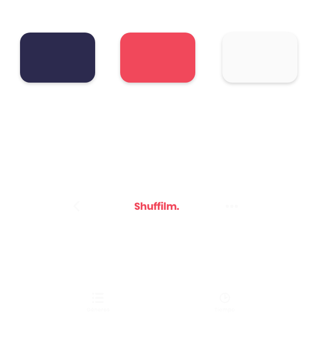
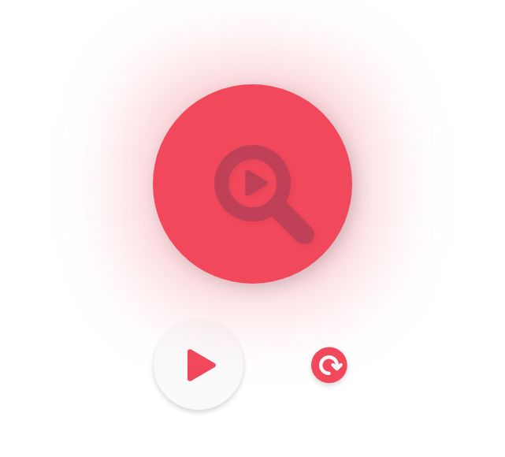

Shuffilm.
Buscador aleatorio para plataformas de streaming
CONCEPTO · UX,UI DESIGN.
Intro
Duración
Agosto - Septiembre 2019
Habilidades
Research
User Testing
Diseño
Prototipado
Objetivo
Diseñar un buscador eficaz que unifique todos los catálogos de
plataformas de streaming y reduzca considerablemente los tiempos de búsqueda,
ofreciendo resultados individuales en el menor tiempo posible.
“El tiempo que se tarda en tomar una decisión aumenta a medida que se incrementa el número de alternativas” - Ley de Hick.
Herramientas

Illustrator

XD

Photoshop
Personas
En la búsqueda del usuario objetivo realicé varias entrevistas de guerrilla a amigxs y familiares. A partir de la información obtenida desarrollé el perfil de “Paloma”.
El problema
Amante del cine y del arte. Las múltiples subscripciones
a
servicios de streaming, la cantidad de opciones disponibles
y
el tiempo desperdiciado en elegir qué ver desencadenan en la
frustración del usuario. Decide abandonar y realizar otra
acción,
o elegir sin ganas.
La meta
Aprovechar el tiempo libre y disfrutar del contenido
multimedia, escuchar sugerencias y recomendaciones
ya sea de
conocidxs o por responsabilidades de la facultad.
Customer Journey
Concepto de aplicación
A partir de estos hallazgos, se estableció que la aplicación Shuffilm debería presentar lo siguiente:- Selector de múltiples plataformas de streaming.
- Filtros de género para una selección mas exacta.
- Filtro de tiempo para permitirle al usuario seleccionar el contenido según la duración del mismo.
Flujo de usuario
Teniendo en cuenta las necesidades y comportamientos de lxs usuarixs, comencé a definir los patrones de diseño de la aplicación y sus principales característiacs.
Ideación
Sketch
En una primera instancia opté por sacudir el teléfono para realizar la búsqueda. Luego esta interacción fue remplazada por un botón central, más práctico y entendible según pruebas realizadas.
Wireframe
En esta etapa decidí implementar el botón central y el apartado de selección de plataforma.
Resultado
Componentes
 